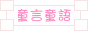
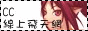

| 本站LOGO連結語法： <a href="http://dsps-vip.gamebase.com.tw/" target='_blank'> <img border=0 src="http://dsps-vip.gamebase.com.tw/logo22.gif"></a> |
| 童話官方網站，內容豐富，想要認識童話進來準沒錯
| 不用說明了，討論區的內容跟精華區的整理，比攻略本還要詳盡
| 也是不用說明了，站長最愛去的地方，這裡是網頁連結處，站長愛用BBS進入
|  內容收集非常完善，是不可多得的一個童話資料性網站
| 不錯的童話的討論版
| | ||||||||||||
| Ro 非官方人氣 Top 的網站
|  飛天歷險攻略網站
|  卡巴拉島攻略網站
| i5愛屋網
| | ||||||||||
| 這是我覺得星爺網站美工整理最好的一個，只是 Pchome 空間有點慢 ~ 不論男女老幼，有心想成為一個星迷一定要來這裡練功的啦 ~
| 這本書真是星爺迷的寶啊！！！自認為死忠星爺迷的站長，當然要打個廣告囉?
| 站長淡江大學資管系同學的網路設計工作室，有案子想要讓他們設計的不妨來看看!!真的很厲害喔 ~ 不論是網頁、美術、程式都行 ~ 身為他的同學~站長真是覺得慚愧呀 >_< 努力中 ~
| 提供遊戲軟體及虛擬點數之購買，當然也有銷售童話相關產品，包括虛擬點卡及實體包
| 國外網站，學習 FLASH 或進階美工者，可以去觀摩一下外國人 ~ 一句話 ... 太神啦 !!!
| Square 歷代太空戰士作品系列網站，FF 迷千萬不可錯過
| 日本 ... 這是幻覺嗎 ... !!!!
| | ||||||||||||||||
特別感謝 慕羽子妃 製作本站 Logo